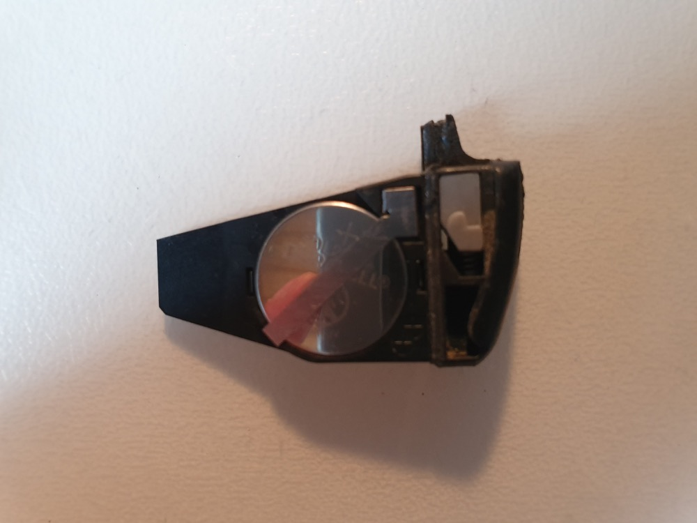
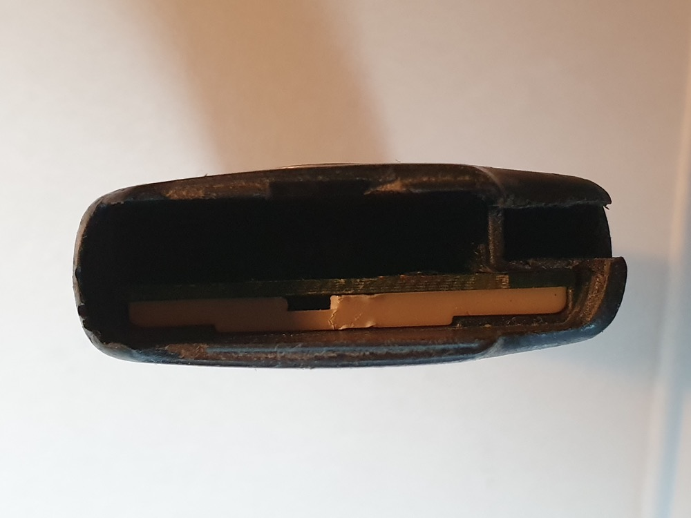
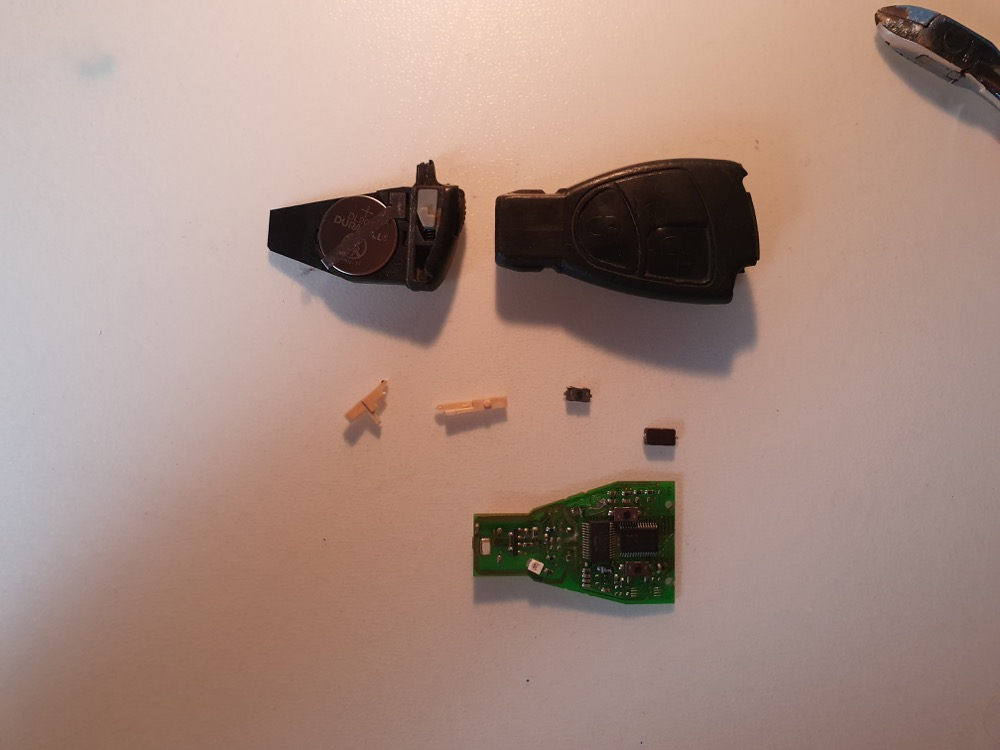
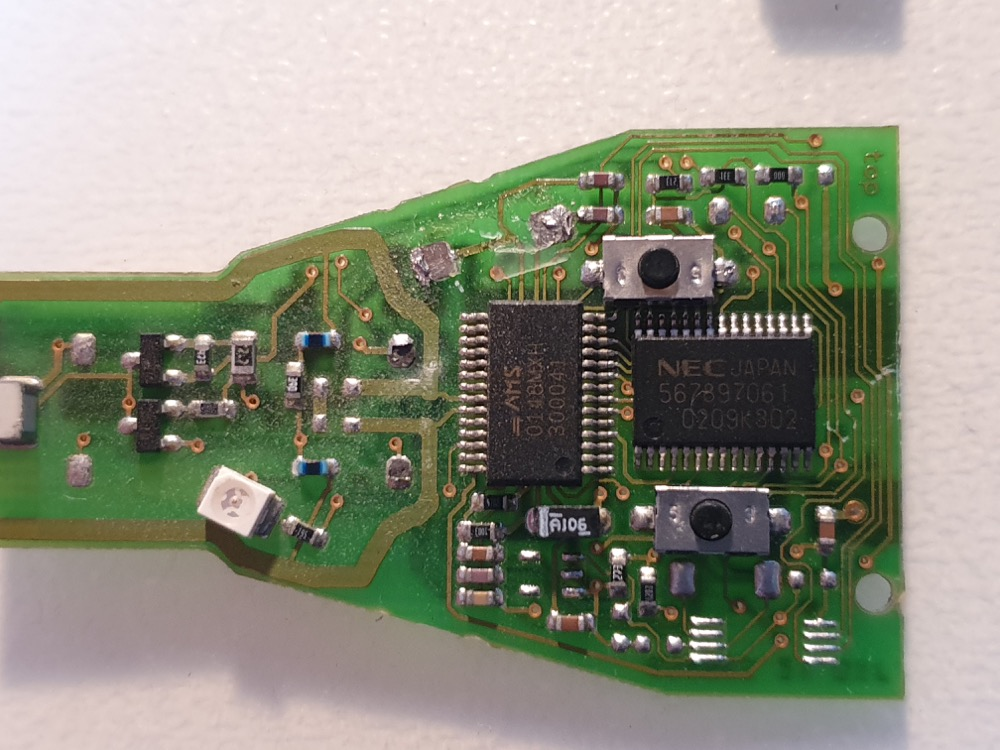
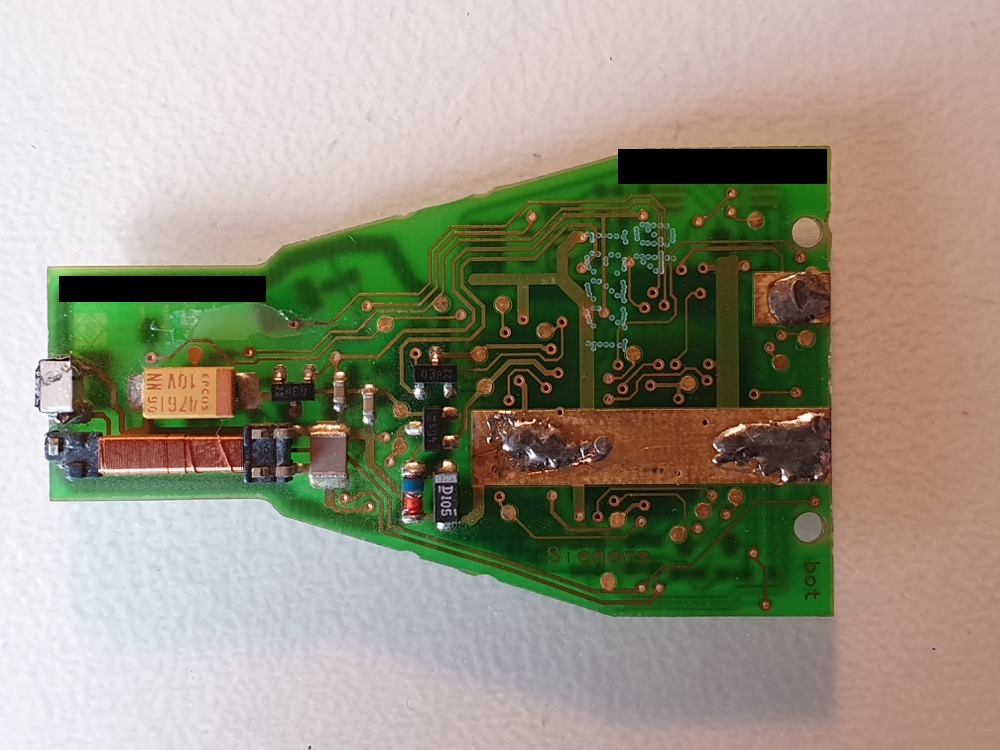
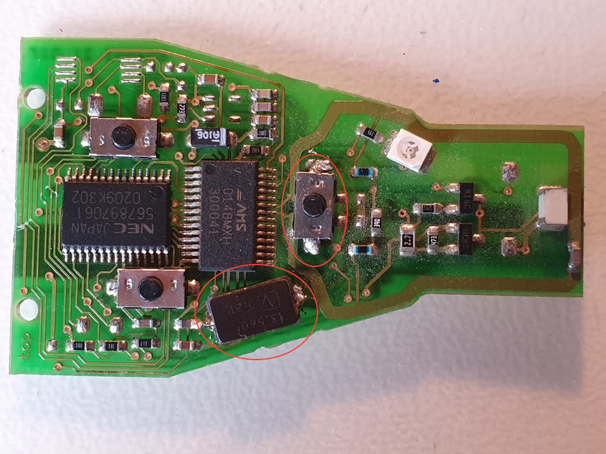

tgauweiler / Mercedes key repair
Introduction
An old mercedes key refused to open the car and the litte led wouldn’t blink.
Replacement
The first step was to replace the batteries and test again.

This didn’t help, so the next step was to remove the PCB board.

The board came out with two loose parts (bad) and a broken plastic spacer (not so bad).

The parts (one button, one signal modulation component?) did fall off.

The bottom of the PCB did look normal, last time the little spule and the IR component broke off.

Soldered the parts back in and added some glue for good measure.

Tested and works reliably again.
Conclusion
~15min of work, but i already opened these keys often. The broken plastic was unfortunate, but the key is pretty old already. Was pretty worth it, a new key costs around ~100€ with programming from the dealer.